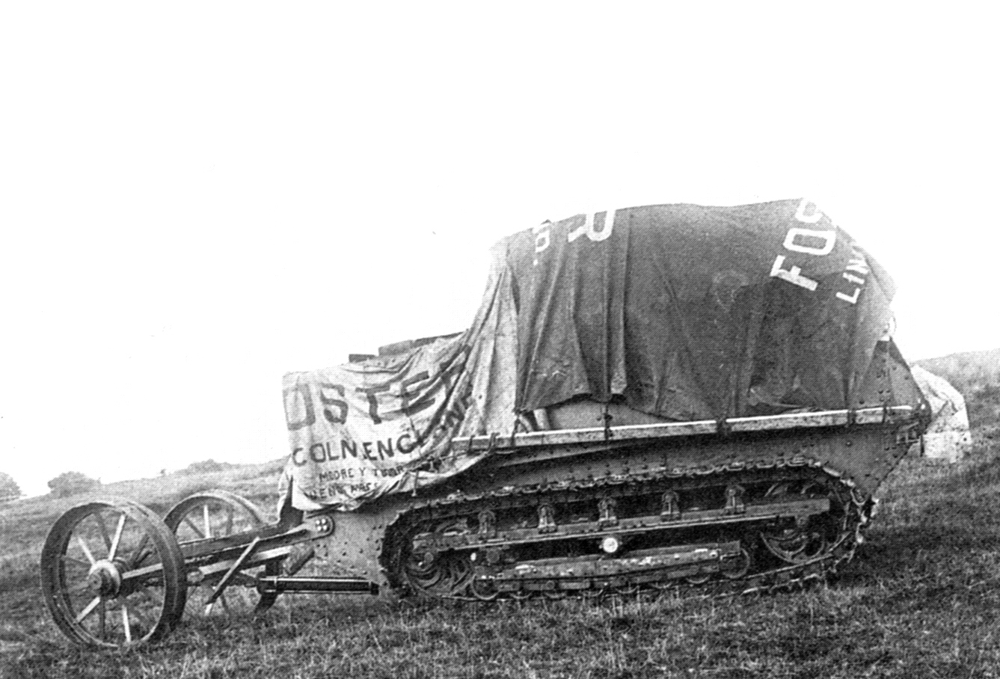
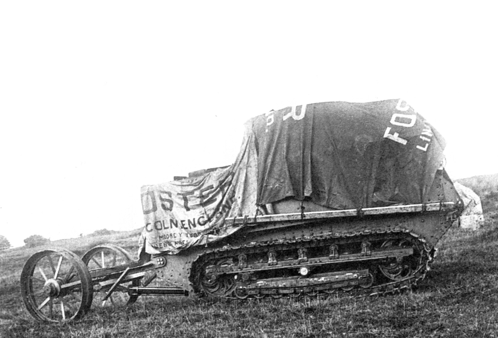
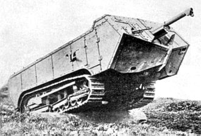
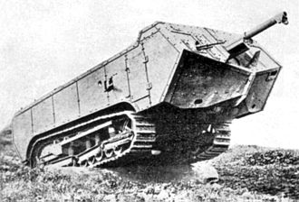

Linconl Machine "Little Willie" ( Britanico )
 

El ùó°ùóº.ùü≠ ùóüùó∂ùóªùó∞ùóºùóπùóª ùó†ùóÆùó∞ùóµùó∂ùóªùó≤ ‚Äúùóüùó∂ùòÅùòÅùóπùó≤ ùó™ùó∂ùóπùóπùó∂ùó≤‚Äù (‚ÄúPeque√±o Guillermo‚Äù) fue un veh√≠culo prototipo en el desarrollo del tanque británico Mark I. Fue construido en el oto√±o de 1915 por solicitud del Landships Committee. Fue, en enero de 1916, el primer prototipo de tanque funcional de preproducci√≥n británico y al mismo tiempo del mundo, un mes antes de que el franc√©s Schneider CA1 hiciera su debut. Demostr√≥ que un veh√≠culo que abarcaba protecci√≥n blindada, un motor de combusti√≥n interna y orugas era una gran posibilidad para el campo de batalla. El Little Willie es el tanque más viejo en existencia, siendo conservado como una de las más famosas piezas de la colecci√≥n del Museo de Tanques de Bovington en Inglaterra.
El trabajo en el predecesor del Little Willie empezó en julio de 1915 por parte del Landships Committee (Comité de los buques terrestres) que se estableció en febrero de 1915 como una pequeña comisión del Gabinete de Guerra británico, encabezada por el primer Lord del Almirantazgo, Sir Winston Churchill, y compuesta por varios políticos, ingenieros y oficiales, con el cometido de establecer las bases para la fabricación del primer vehículo blindado antes del final de 1915 y cubrir la necesidad de Gran Bretaña en la Primera Guerra Mundial de una máquina de guerra capaz de cruzar una trinchera de 1,5 m de ancho. Los británicos consideraron tres sistemas de tracción de máquinas agrícolas; el Pedrail británico resultó demasiado pesado y el Killen-Strait de tres orugas fabricado en Estados Unidos era demasiado liviano. Un par de máquinas Bullock Creeping Grip fueron probadas a continuación y demostraron que el concepto de vehículo con orugas y blindado estaba en la línea correcta, aunque las orugas de Bullock no eran satisfactorias, sin embargo; el 22 de julio se le otorgó a William Ashbee Tritton, director de la empresa de maquinaria agrícola William Foster & Co. de Lincoln, un contrato para desarrollar una "Máquina Tritton" con dos orugas basado en un diseño del ingeniero jefe de Tritton, William Rigby. Tuvo que emplear orugas alargadas y componentes de suspensión (siete ruedas de rodaje en lugar de cuatro) proveídos por la Bullock Tractor Company de Chicago. Cuando las orugas llegaron, se notó que eran muy toscas.
El 11 de agosto empezó su construcción; el 16 de agosto Tritton decidió añadir una cola con ruedas para ayudarle con los virajes. El 9 de septiembre la Máquina Lincoln Número Uno, como era llamado el prototipo, hizo su primera prueba en el patio de la Fundición Wellington. Rápidamente se notó que el perfil de las orugas era demasiado plano y ofrecía demasiada resistencia contra el suelo al virar. Para resolver esto, se cambió la suspensión y el perfil del fondo se hizo más curvo. Entonces surgió el siguiente problema: al cruzar una trinchera, la oruga saltaba, no encajaba nuevamente en las ruedas y se trababa. Tritton y el teniente Walter Gordon Wilson probaron varios tipos de diseños alternativos para las orugas, inclusive correas de balata y cables de acero planos. Finalmente, el 22 de septiembre, Tritton concibió un sistema que utilizaba planchas de acero estampado remachadas a eslabones que incorporaban guías para encajarse en el interior del marco de la oruga. Los marcos de las orugas fueron conectados al chasis mediante grandes cojinetes.[1]​ Este sistema no tenía suspensión, ya que las orugas eran firmemente mantenidas en su lugar y capaces de moverse en solo un plano. Este diseño fue exitoso y se empleó en todos los tanques británicos de la Primera Guerra Mundial hasta el Mark VIII, aunque limitaba la velocidad.


 
